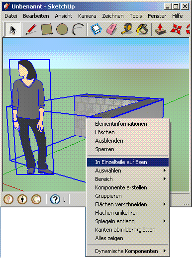
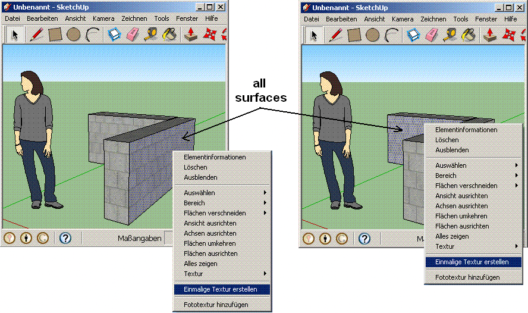

|
||||||||||
| PREV NEXT | FRAMES NO FRAMES | |||||||||
See:
Description
| Packages | |
|---|---|
| colladaLoader | |
| colladaLoader.xmlMapping | |
The collada-Loader allows you to import dae oder kmz-Files you made in Google Sketchup 8 into Processing.
If you already have made a file in a previous version of Sketchup 8, save as Version 8 first. The reason is Sketchup exports another xml-structure from previous versions. As a next step you have to remove all groups in your model. Press CTRL+A and click right mouse-button (see picture). If you dont do that all you 'll get exceptions in your scetch.

Because processing itself doesn't support repetive textures (it produces blurred graphics) You must edit each textured shape manually if your model contains textures . Right click on the shape (see next pic) will solve that problem. In this example: Susan doesn't need any edition but the wall does...

Go to File → Export → 3D-Model and save it to your data-folder from processing. now You'r able to import into processing.
The simplest way is the following Code. The importer will unpack the kmz-file and read the unzipped dae-file. In the examples-folder of the library you will find more
import colladaLoader.*;
ColladaLoader model;
void setup()
{
size(500, 500, P3D);
model = ColladaLoader.getInstance("susanOnWall.kmz", this); //put susan into your "data" folder
frameRate(10);
}
void draw()
{
background(16);
lights();
model.draw();
}
see also detailed specifications
static ColladaLoader getInstance(param1, param2) | returns the model as a object of type ColladaLoader | |
String param1 | the Filename: either "foo.dae" or "foo.kmz" Don't mix dae's and kmz's into same folder. Standartpath is Processing's "data" folder. Also allowed are relative and absolute paths in stringformats "./" or "c:/" | |
PApplet param2 | Set it to "this" if or otherwise you can set "null" "this" works in any case | |
void draw() | draws for you the model. If you manipulate Triangle or Line objects at runtime they will be drawed correspondingly | |
Triangle[] getTriangles | returns an array of datawrapper-objects. You can use this datas e.g. to a printout or logging, manipulating, whatever. One Triangle object contains following properties: | |
float A.x, float A.y, float A.z | the 3D coordinates of A Vertex | |
float B.x, float B.y, float B.z | the 3D coordinates of B Vertex | |
float C.x, float C.y, float C.z | the 3D coordinates of C Vertex | |
float texA.x, float texA.y | the 2D coordinates in texture-image for A Vertex | |
float texB.x, float texB.y | the 2D coordinates in texture-image for B Vertex | |
float texC.x, float texC.y | the 2D coordinates in texture-image for C Vertex | |
float colour.red | The color and Transparency of the Triangle | |
containsTexture | returns a boolean if the triangle can be drawed in "texture-mode" | |
imageFileName | returns a String where the jpg-file is loaded from (texture only) | |
imageReference | a PImage-Reference of the texture | |
Line[] getLines | returns an array of Line objects. You can use this as above | |
float A.x, float A.y, float A.z | (see above) | |
float B.x, float B.y, float B.z | (see above) | |
float colour.red | (see above) | |
Additional goodies you will find in version 1.1: The benefit is you save performance because they must be called only once.
void shift(length, axis) | shifts the positions of model without changing the view | |
length | float value in pixels | |
axis | Valid characters for the 3D Axis are: 'x', 'y', 'z' | |
void rotate(angle, axis) | rotates the model without changing the view | |
angle | float value in radiant | |
axis | Valid characters for the 3D Axis are: 'x', 'y', 'z' | |
void scale(factor) | rezizes the model itself | |
factor | float value | |
Take also a look to:
Last Update: Dec 2010
|
||||||||||
| PREV NEXT | FRAMES NO FRAMES | |||||||||